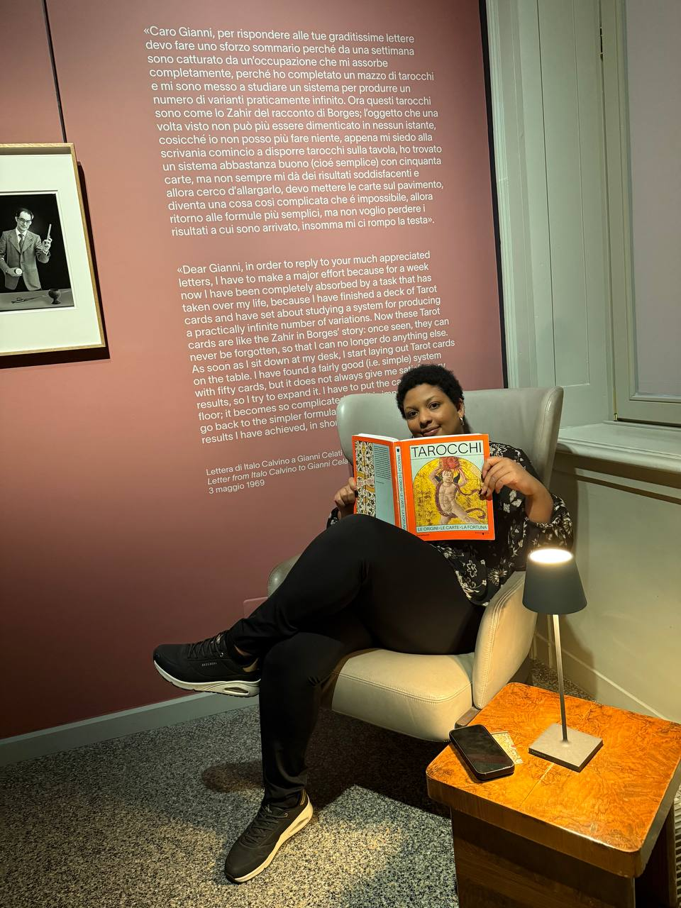

★★★★★
«Ero molto scettico nei confronti della cartomanzia, ma grazie a Luna ho scoperto che non si tratta di qualcosa da ciarlatani, bensì di un potente strumento di conoscenza psicologica e spirituale.»

attraverso i Tarocchi
Un viaggio di trasformazione interiore tra simboli, archetipi e saggezza antica. I Tarocchi non predicono il futuro. Ti aiutano a ricordare chi sei.
I Tarocchi come linguaggio dell’anima. Un ascolto interiore guidato da simboli, non da promesse facili.
Uno spazio dedicato ad ascoltare ciò che i Tarocchi hanno da rivelare, per fare chiarezza, comprendere i tuoi schemi interiori e affrontare con maggiore consapevolezza il tuo percorso di vita.
Uno spazio intimo e protetto in cui i Tarocchi diventano specchio. Insieme leggiamo i simboli per fare chiarezza su ciò che stai vivendo e riconoscere il prossimo passo con maggiore consapevolezza.

Dicono di noi
«Ero molto scettico nei confronti della cartomanzia, ma grazie a Luna ho scoperto che non si tratta di qualcosa da ciarlatani, bensì di un potente strumento di conoscenza psicologica e spirituale.»
«Farmi leggere i tarocchi da Luna mi ha aiutato in modo pratico. Perchè dopo aver individuato il problema, mi ha subito detto come risolverlo.»
«Luna ha la capacità di mettere chiunque a proprio agio. Mi sono sentito libero di parlarle anche di questioni importanti e molto intime, senza mai sentirmi giudicato.»
«Grazie a Luna sono riuscita a fare chiarezza su situazioni che non riuscivo a comprendere e, soprattutto, a capire quale insegnamento potevo trarre da ciò che stavo vivendo.»
Scorri per leggere tutte le voci →